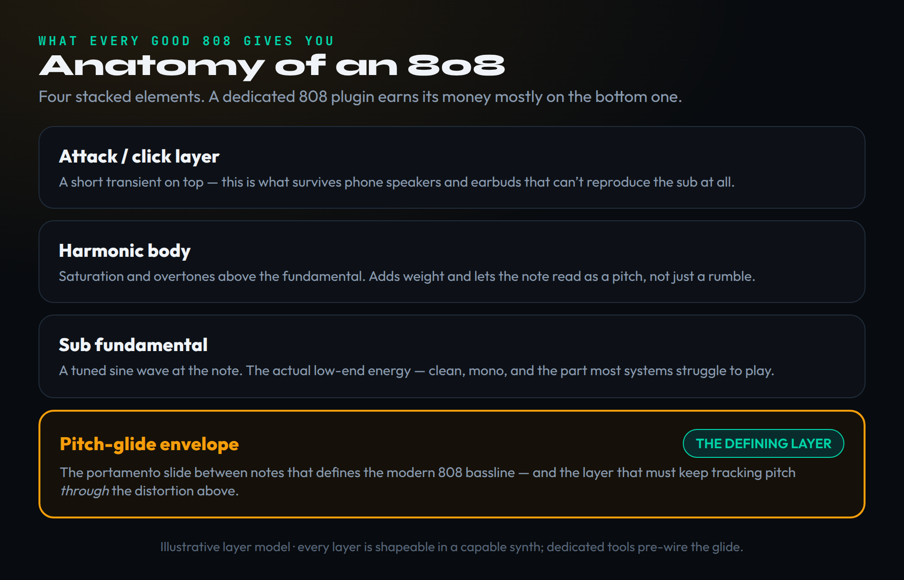

Search for the best 808 plugin and every list says roughly the same thing: here are ten plugins, SubLab is the best, and here is a separate pile of free ones. That framing is useless, because it answers a question almost nobody is actually asking. The real question is not which plugin is best — it is which 808 fits the way you build low-end, and the honest answer for a lot of producers is that they already own a perfectly good 808 in a synth they bought for something else.
So this roundup is organized differently. Instead of a flat ranking, it sorts every worthwhile 808 tool into the four real workflows producers use, then tells you which paid plugin genuinely earns the upgrade in each lane and which free option does the same job for nothing. We re-checked every plugin's current version, format and pricing at publication, and where a developer's pricing is sale-driven and opaque we say so rather than invent a number.
One thing up front, because it shapes everything below: an 808 is not a mysterious instrument that requires a special plugin. It is a tuned sine wave with a pitch envelope and some saturation. That is the whole secret. Understanding that is what lets you decide honestly whether a dedicated tool is worth your money or whether the synth already open in your session will do. If you want the from-scratch version of this, our guide to making trap 808s from scratch builds one note by note.
A note on who this is for. If you are a beginner, the most valuable thing here is the permission to not spend money yet — you can make professional 808s with free tools today, and the section on the synth you already own is written for you. If you are an intermediate producer whose 808s feel weak on phones or muddy against the kick, the processing section is the part that will change your tracks the most, regardless of which plugin you own. And if you are shopping for a paid upgrade, the workflow lanes will tell you which one actually fits how you work, so you buy once instead of three times.
What an 808 actually is

What every good 808 tool gives you, stacked. The pitch-glide envelope, highlighted, is the layer that defines the modern 808 and the one a dedicated plugin pre-wires for you. Illustrative layer model.
The 808 takes its name from the Roland TR-808 drum machine of the early 1980s, whose bass-drum voice — a tuned sine with a long decay — got pushed far past its intended use until it became the melodic bass instrument that anchors hip-hop, trap, drill and most of modern pop. When producers say “808” today they almost never mean a kick; they mean that long, gliding, tuned sub-bass note that carries the low-end melody of a track.
Strip it down and a modern 808 is four stacked things. At the bottom is the sub fundamental: a clean, tuned sine wave that holds the actual low-frequency energy. Above it sits a harmonic body of saturation and overtones, which adds weight and, crucially, lets the note read as a definite pitch instead of a formless rumble. On top of that is a short attack or click layer — the transient that gives the note presence and, as we will see, the part that survives on speakers too small to play the sub at all. And threading through all of it is the pitch-glide envelope, the portamento slide between notes that, more than anything else, defines the modern 808 bassline.
That glide is the layer worth paying attention to, because it is where a dedicated 808 plugin earns its keep. Sliding cleanly from one note to the next while keeping the sub tuned and present — and keeping that slide audible through a layer of distortion — is fiddly to build by hand every time. A tool like SubLab XL or 808 Studio II pre-wires the glide, the sub-maximizing oscillator and the attack layer so you get a finished, consistent 808 in seconds. That convenience, not some secret sound you cannot get elsewhere, is the real product.
The amplitude envelope matters almost as much as the glide, and it is the parameter beginners overlook. An 808 is defined by a long decay: you hit one note and it rings out, sustaining and slowly fading rather than stopping short. Lengthen the decay and the 808 becomes a sustained bassline that fills the space between drums; shorten it and the same patch becomes a punchy, staccato bass that leaves room for a busy beat. Tuning is the other non-negotiable — the 808 must sit in the key of your track, which is why every serious 808 tool gives you a clear way to set the root note and why a mistuned 808, however expensive the plugin, will fight the rest of the song.
The four ways to make an 808

The four workflows, and the tools that fit each. The right 808 plugin is the one that matches the lane you work in. Illustrative; picks reflect current 2026 versions verified at publication.
Once you see the 808 as those four layers, the plugins sort themselves into four ways of assembling them. Almost every tool worth naming lives cleanly in one of these lanes, and knowing your lane is most of the buying decision.
The preset-driven, mix-ready lane is for producers who want a finished 808 fast and consistent. You load a dedicated bass instrument, pick a preset, tune it to your key, and it already sounds like a record. The synth-from-scratch lane is for total control: you build the sub, the harmonics, the glide and the distortion yourself in a full synthesizer, which is slower but produces sounds that are genuinely yours. The sample-based, character lane gives you baked-in analog flavor to start from — sampled 808s with the warmth and grit of real hardware already in them. And the fourth lane, the one the listicles skip because it costs them affiliate clicks, is the synth you already own: the wavetable or subtractive synth on your hard drive that makes an 808 the moment you understand the four layers above.
None of these lanes is better than the others — they trade speed against control against character. The mistake is buying across lanes: paying for a preset machine when you wanted deep control, or grinding away from scratch when a preset would have shipped the beat an hour ago. Pick the lane that matches how you actually work, and the shortlist gets very short.
You probably already own an 808
Before you spend anything, do this honestly: open the most capable synth you own and try to build an 808 in it. A single sine-wave oscillator, an amplitude envelope with a long decay, a pitch envelope or glide for the slide, and a saturator or distortion after it — that is an 808. If your synth can do those four things, and almost every modern synth can, you can make a release-ready 808 today without buying a plugin.
This matters most for two free synths that cost nothing and rival paid tools. Vital is a free spectral-wavetable synth with a clean sub oscillator, flexible envelopes and a built-in distortion module; it makes excellent 808s and is a serious instrument for everything else too, which is why it shows up in our roundup of the best synth plugins. Helm, by Matt Tytel, is a free open-source subtractive synth that handles the tuned-sine-plus-glide recipe just as well. And if you like the Massive sound, Native Instruments gives away Massive X Player free, with a bank of presets and a bass expansion included.
Here is the actual recipe, so you can try it in the next five minutes. Set one oscillator to a sine wave. Open the amplitude envelope and pull the decay long and the sustain low, so the note rings and fades. Turn on the synth's glide or portamento and set it to legato so overlapping notes slide instead of retriggering — that is your pitch glide. Add a distortion or saturation unit after the oscillator and bring it up until the note has body and bite. Tune the oscillator to your track's key. That is a complete, professional 808, built in any synth you own, and once you have done it once you will understand exactly what a dedicated plugin is automating for you.
So when is a dedicated tool worth buying over the synth you already own? When the convenience pays for itself. If you make 808-driven music every session, a tool that gets you a tuned, glided, mix-ready 808 in ten seconds — with a sub-maximizer that keeps it consistent across speakers — saves real time and removes a recurring point of failure. If you make an 808 once a month, your stock synth is fine. Buy the convenience when you will use it constantly; otherwise keep the money. With that honesty established, here are the paid tools that genuinely earn the upgrade.
Workflow 1 — Preset-driven and mix-ready
These are dedicated bass instruments built to hand you a finished 808 with minimal effort. They are the most popular paid 808 tools for a reason: they collapse the four layers into one screen, ship with hundreds of ready sounds, and stay consistent from beat to beat. If you make trap, drill or modern hip-hop and want to stop fighting your low-end, this is the lane — and it pairs naturally with our wider picks for the best plugins for trap.
SubLab and SubLab XL — the genre standard
Future Audio Workshop's SubLab is the plugin most producers think of first, and for good reason. Its signature is the X-Sub oscillator, a psychoacoustic sub-bass engine that keeps the fundamental deep and consistent across playback systems, layered with a sampler and a simple synth so you can stack a kick transient, an analog waveform and the sub into one punchy bass in a single workflow. The original ships with hundreds of samples and several signature bass packs and supports VST2, VST3, AU and AAX with NKS for Komplete users.
SubLab XL is the one most people should buy today. It keeps X-Sub and adds a full analog-style synth engine with sine, triangle, saw, square and supersaw shapes plus a Super Oscillator, editable and tempo-synced glide curves, a deeper FX section with multiple distortion types, and a larger library. That editable glide is exactly the defining layer from the anatomy above, exposed as a curve you can draw. Pricing is the catch: SubLab and SubLab XL carry list prices in the rough region of seventy and eighty dollars, but they are discounted so aggressively and so often — frequently to a fraction of list — that quoting a fixed number would mislead you. Check current pricing at the developer or Plugin Boutique, and note you can crossgrade from SubLab to XL cheaply if you own the original.
The reason X-Sub is worth understanding rather than just clicking past: it is a psychoacoustic oscillator, which means it does not only produce the sub frequency you ask for — it adds carefully tuned harmonics that make your ear perceive a deep, consistent low note even on systems that cannot physically reproduce it. That is the single hardest problem in 808 production, the one most beginners lose hours to, and SubLab solves it at the engine level. If your complaint about your current 808s is that they sound huge in headphones and vanish in the car, an X-Sub-based tool is the most direct fix on this list.
808 Studio II — the sound-design workhorse
Initial Audio's 808 Studio II is the other heavyweight in this lane, and it leans a little more toward shaping than SubLab. It is a purpose-built bass synth with three oscillators including a dedicated sub and a sampler, a deep stack of selectable waveforms, drag-and-drop modulation that lets you route envelopes and LFOs onto almost any control, and a full effect rack — overdrive and distortion, compressor, three-band EQ, chorus, filter and a bitcrusher — with a sidechain sourced from the kick section so the transient cuts through. Its built-in sequencer with overlapping notes is built specifically to produce the classic trap pitch-glide, and a dedicated glide knob plus a pitch-slide control put the defining layer right on the front panel.
It ships with over eighty presets, is a one-time lifetime purchase rather than a subscription, supports AAX, AU, VST2 and VST3, and runs natively on Apple Silicon. List price sits in the high-sixties region but, like SubLab, it is regularly on sale for far less, so check the current price before you buy. Producers tend to choose 808 Studio II when they want to sculpt and resample more aggressively, and SubLab XL when they want the deepest single sub with the least friction; honestly, either one will serve a trap or hip-hop producer for years.
Where 808 Studio II quietly pulls ahead is resampling. Because you can drag your own audio onto its sampler, a common pro move is to build or import an 808, bounce it, then reload that bounce and process it again — layering, distorting and re-pitching across passes until the sound is unmistakably yours. Combined with the per-control modulation and the kick-sourced sidechain, it behaves less like a preset machine and more like a small bass-design studio. If your interest in 808s is creative rather than purely practical, that resampling loop is a genuine reason to pick it.
Workflow 2 — Synth-from-scratch
If you want total control — and the ability to design an 808 that exists nowhere else — you build it in a full synthesizer. This lane is slower than loading a preset, but it is the one that produces signature sounds, and it doubles every dollar you spend because these synths make everything else too, not just bass.
Serum 2 — the do-anything answer
Xfer Records' Serum has been the producer's reference wavetable synth for over a decade, and Serum 2, released in March 2025, rebuilt it around five oscillator engines — wavetable, sample, multisample, granular and spectral — with redesigned effect routing, an arpeggiator and a clip sequencer. For 808s the recipe is simple: a clean sine wavetable, a long amplitude decay, a pitch envelope for the glide, and Serum's distortion to add the harmonics that carry on small speakers. Because you control every stage, you can make anything from a glassy R&B sub to a screaming drill bass in the same instrument, which is why it remains the default recommendation for producers who want one synth to cover bass, leads and pads.
Serum 2 lists at $249, and the introductory price has expired — but it is a free upgrade for anyone who owned the original Serum, and it can be rented to own through Splice at roughly ten dollars a month. The honest caveat is CPU: the new engines are heavier than the old one, so a project full of Serum instances will tax an older machine. If you want the full breakdown of what changed and whether it is worth it, see our Serum 2 review. For 808 duty specifically, even the original Serum is more than enough.
The Serum 808 patch is worth spelling out because it teaches the instrument. Load a basic sine or a simple sub wavetable on oscillator A and silence the others. Set the master to mono so the sub stays centered. Pull the amp envelope's decay long. Assign an envelope or the global glide to pitch for the slide. Then route the signal into Serum's distortion module and automate or modulate the drive to taste — this is where you move along the genre spectrum, from a whisper of saturation for an R&B sub to full overdrive for drill. Because every stage is visible and modulatable, you can save your finished 808 as your own preset and never build it from zero again, which is the practical answer to “why not just use presets”: you build the preset once, your way.
Massive X — the gritty, modulating alternative
Native Instruments' Massive X is the spiritual successor to the synth that defined an era of bass music, and it is built for exactly the kind of moving, aggressive low-end that drill and rage want. Two wavetable oscillators draw on a large library of tables with multiple reading modes, a pair of phase-modulation oscillators add movement, and a deep modulation system with performers and a per-note tracker lets you animate the sound in ways a dedicated 808 tool cannot. For a tuned-sine 808 it is overkill in the best way — you get the clean sub plus an enormous palette of harmonic character to distort.
Massive X lists at $199 with loyalty pricing from $149 for existing NI customers, supports VST, AU and AAX, and runs on Apple Silicon through Rosetta. If you are not sure you need the full version, the free Massive X Player gives you a usable taste of the engine. Our Massive X review goes deeper on where it beats and trails Serum. Between the two, choose Serum 2 for clarity and the cleanest workflow, Massive X for grit and hands-on modulation.
Workflow 3 — Sample-based and character
Synthesized 808s are clean and infinitely editable, but sometimes you want a sound that already has analog warmth, tape grit or a specific producer's flavor baked in, with nothing to build. That is the sample-based lane: instruments and libraries that play back recorded and processed 808s you tune to your key and drop into the beat. It is the fastest path to character, at the cost of deep editing.
Output Substance and Kontakt libraries
If you run Kontakt — and a lot of producers do — third-party bass libraries are an underrated route to a modern 808. Output's Substance is the standout here: a bass-design instrument with a large library of layered, processed low-end sources and macro controls that let you blend and morph between them quickly, giving you character-rich 808s and basses without synthesizing from zero. Because it lives in Kontakt it sits alongside the rest of your sampled instruments, which suits producers who already work that way. Pricing on these libraries shifts with sales, so check the developer's current price rather than a quoted figure, and note that Output Substance specifically needs a Kontakt or Kontakt Player host. For producers chasing a sampled-808 sound for hip-hop, these libraries pair well with the picks in our best plugins for hip-hop and the production-focused hip-hop production plugins roundups.
When does sampled beat synthesized? When the character is the point and time is short. A sampled 808 arrives already saturated, already weighted, often already recorded through analog gear, so it has a finished quality a fresh sine lacks — drop it in, tune it, and the beat sounds done. The trade is editability: you cannot reshape a sample as deeply as a synth patch, and if you want a sound nobody else has, a library full of presets is the wrong tool. One genuine caution on free and cheap 808 sample packs specifically: a sampled 808 you did not make yourself carries whatever license the pack came with, so for a commercial release make sure the samples are royalty-free and cleared for distribution. A synthesized 808 you built has no such question — it is yours.
The free 808 plugins that genuinely compete
The free 808 plugins are good enough now that a beginner can make professional low-end without spending a cent — and even working producers keep a couple in the folder. These are the ones worth downloading.
Why are the free ones this good? Because the 808 is a solved problem at the engine level — a sine, an envelope, a glide and some saturation are not expensive to implement — so the gap between a free 808 synth and a paid one is mostly preset count, sample libraries and convenience features, not raw sound quality. That is very different from, say, a high-end reverb or a mastering limiter, where the paid version genuinely sounds better. With 808s, a skilled producer on a free plugin will out-produce a beginner on the most expensive one every time, which is exactly why the processing section above matters more than the shopping list.
Subdivine Lite — the best free 808 synth
Diginoiz's Subdivine Lite is the standout. It runs the same engine as the paid Subdivine, limited mainly in preset count rather than capability: you get six presets, several distortion algorithms you can place pre or post, full ADSR shaping, a glide control and mod-wheel pitch slides. That is the entire 808 anatomy — sub, harmonics, attack and glide — in a free, easy plugin, and its sounds are usable out of the box with a touch of EQ. For a lot of producers, Subdivine Lite plus a free full synth is all the 808 capability they will ever need. It runs on Windows and macOS in VST and AU.
Beyond it, three more free options cover the other workflows. The free Lite 808 rompler family — 808 Bass Module Lite and similar sample players — gives you ready-to-play sampled 808s in your project's key, the fastest pick-and-play route to a usable sound. RVK-808 by Electronik Sound Lab is a sample-based virtual 808 with multiple drum kits, per-channel outputs and built-in reverb and distortion, closer to a full TR-808 rompler than a melodic bass synth. And Synsonic's BD-808 models the original 808 bass-drum circuit specifically, with tune, decay, accent and tone controls and MIDI learn — minimal, but authentic if you want the genuine analog bass-drum behavior. Stack any of these with a free synth like Vital and you have every lane covered for nothing.
The modern 808 isn't one sound

As distortion and midrange climb, the best-suited plugin changes. Match the tool to the sub-genre rather than a single leaderboard. Illustrative tone map; placements reflect typical genre conventions.
Here is the nuance the flat listicles miss entirely: there is no single “best 808 sound,” because the 808 does different jobs in different genres, and the best plugin shifts with the job. Think of it as one instrument moving along a spectrum of distortion and midrange, from clean and deep to aggressive and forward.
At the clean end sits the sub-only foundation of R&B, pop and a lot of drumless beats: a tuned sine with almost no distortion, there to hold the room rather than fight for it. Any clean sub does this — Vital, or a SubLab pure-sub preset. In the middle is the melodic glide bassline of trap and modern hip-hop, where a long, tuned, gliding note carries the melody and glide and tuning are everything; this is the home turf of 808 Studio II, SubLab XL and Serum 2, and the sound at the center of how you make trap beats. At the aggressive end is the over-distorted, mid-heavy 808 of drill, rage and hardstyle, where heavy saturation pushes the mids forward so the note cuts on any system and the distortion is the sound — best served by SubLab XL driven hard or a Serum 2 patch built for grit.
The practical takeaway: do not chase whichever plugin a leaderboard crowned best this year. Decide what the 808 needs to do in your genre — anchor quietly, sing a melody, or cut like a saw — and pick the tool, and the amount of distortion, that serves that job.
It is worth saying what changes and what does not as you move along that spectrum, because it is mostly one variable. The sub fundamental and the tuning stay constant — every good 808 in every genre is a tuned sine at heart. What climbs from left to right is the amount of harmonic content you add above that sine: a touch of warmth for pop, enough saturation to carry a melody for trap, and aggressive, mid-forward distortion for drill and rage. So the same plugin can serve every genre; what differs is how hard you drive the same control. That is genuinely freeing, because it means you do not need a different 808 plugin for every style — you need to understand the one knob that moves you across the map.
The plugin is only half the battle
This is the part the affiliate-driven lists bury, because it sells nothing: the plugin you choose is maybe half of how your 808 sounds. The other half is processing, and a producer who understands the processing will get a better 808 out of a free plugin than a producer who does not will get out of the most expensive one. Five things make or break the sound.
Glide through distortion. The slide between notes has to keep tracking pitch after the distortion stage, not before it, or the saturated harmonics smear instead of following the note. Get the order right and the glide stays musical even when the bass is screaming.
An attack layer for small speakers. Phone speakers and earbuds cannot reproduce the sub at all, so a pure sine vanishes on them. A short click or transient on top, plus the harmonics distortion generates, give small speakers something to play, so the brain still hears the low note. Check every 808 on an actual phone.
Mono and the low end. Sub-bass should be mono — stereo width down low causes phase problems and disappears when a club sums the signal. Collapse to mono and confirm the 808 holds. And high-pass the sub-rumble below roughly 30 Hz, which carries no useful pitch and only eats headroom and threatens PA systems.
Sidechain to the kick. The kick and the 808 occupy the same frequency range and will fight unless you make room — duck the 808 a touch under the kick, or carve complementary EQ, so both punch instead of masking each other. Our guides to mixing kick and bass and to EQing bass walk through the moves in detail.
A few concrete starting points, because vague advice helps nobody. For the sidechain, a fast attack and a release timed to the tempo — roughly an eighth or sixteenth note — usually gets the 808 out of the kick's way without audible pumping. For the EQ fight, one common split is to let the kick own the very top of the sub range and the click region while the 808 owns the deepest fundamental, so they stack rather than collide. When you distort, distort a parallel copy and blend it under a clean sub rather than saturating the whole signal, which keeps the bottom solid while the harmonics ride on top. And always, always bounce the beat to your phone and your car before you call the 808 finished; the room you mix in is the one place an 808 is guaranteed to sound good, and it is the least representative of where people will actually hear it.
You do not necessarily need a dedicated plugin for any of this, but one treatment tool is worth a mention: United Plugins' SubBass Doctor 808 is not an 808 instrument at all — it is an enhancement effect that filters the harmful lowest subs, restores energy in the healthy sub range and adds parallel saturation, a useful safety net when you are mixing low-end on imperfect monitors. Use it to treat an 808, not to make one. And to dial your 808 to the exact note of your track, our free 808 sub-bass tuner tool gives you the pitch in one click.
So which 808 plugin should you buy?
If you want one fast, mix-ready 808 tool and you make trap, drill or hip-hop, buy SubLab XL or 808 Studio II — SubLab XL for the deepest single sub with the least friction, 808 Studio II for more hands-on sound design and resampling. Wait for one of their frequent sales; neither is worth full list when both go so low so often.
If you want total control and a synth that does far more than bass, buy Serum 2 — or get it free if you owned the original — and use Massive X instead when you want grit and deep modulation. If you want baked-in character and you live in Kontakt, look at Output Substance. And if your budget is zero, or you are not yet sure you make enough 808-driven music to justify a purchase, start with Subdivine Lite and a free synth like Vital — genuinely, you can ship records with nothing else.
But the most useful answer remains the one the listicles will not give you: open the synth you already own, build the four layers, and see whether you need to buy anything at all. The best 808 plugin is the one that matches how you make 808s — and half the producers reading this already have a perfectly good one installed.
Pick Yours — Three Decision Drills
- Open the most capable synth you have and set one oscillator to a sine wave; silence the others and switch the synth to mono.
- Open the amplitude envelope and pull the decay long with a low sustain, so a single note rings out and slowly fades.
- Turn on glide or portamento in legato mode, then play two overlapping notes and listen for the slide between them.
- Add a distortion or saturator after the oscillator, bring up the drive until the note has body, and tune it to your track’s key. You just built an 808 for free.
- Make a clean sub-only 808 from any plugin and play your beat through your studio monitors or headphones — it should sound huge.
- Now play the exact same beat through your phone’s built-in speaker. The 808 will likely vanish or sound thin.
- Add saturation and a short attack or click layer to the 808, raising them until the note is clearly present on the phone.
- Collapse the mix to mono and high-pass below roughly 30 Hz, then re-check both systems. Aim for an 808 that holds on both, and note exactly how much harmonic content that took.
- Start from a single clean 808 patch — one good sub-only sound in SubLab, Serum, Vital, or your own build.
- Save it three times and shape each toward a genre using only distortion and decay: a soft, sustained sub for R&B; a tuned, gliding, lightly driven bass for trap; an aggressive, mid-forward, heavily saturated note for drill or rage.
- Sidechain each to a kick with a fast attack and a tempo-timed release, and carve complementary EQ so kick and 808 stack rather than mask.
- Bounce all three to your phone and car. Confirm one starting patch served three genres, and that the variable that moved you across them was mostly how hard you drove the same distortion.